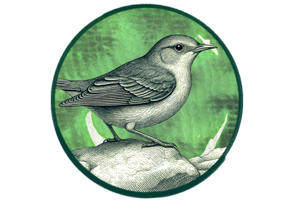

Knightingale
Voice dictation that minds its own business.



Voice dictation that minds its own business.
curl -fsSL https://shatilkhan.github.io/knightingale/install.sh | sh
Then:
knightingale setup # pick a provider, set the hotkey knightingale toggle # start dictating
Default hotkey is Super+K on Linux/Windows and Cmd+Shift+K on macOS. Tap to start, tap again to stop and type into whatever has focus.
cargo install knightingale
brew install …
scoop install …
| Provider | Env prefix | Default model |
|---|---|---|
groq (default) | GROQ_* | whisper-large-v3-turbo |
openai | OPENAI_* | whisper-1 |
deepinfra | DEEPINFRA_* | openai/whisper-large-v3-turbo |
fireworks | FIREWORKS_* | whisper-v3-turbo |
lemonfox | LEMONFOX_* | whisper-1 |
sambanova | SAMBANOVA_* | Whisper-Large-v3 |
azure | AZURE_OPENAI_* | (per deployment) |
custom | CUSTOM_* | self-hosted |
local | — | whisper.cpp |
Knightingale does not collect or transmit telemetry of any kind. No usage metrics, no error reports, no analytics, no phone-home. Your audio, transcripts, and configuration stay on your machine unless you explicitly point Knightingale at a cloud provider — in which case audio is sent only to the API endpoint configured in your .env, with your key, and nowhere else. No proxy, no cache, no logging by us.